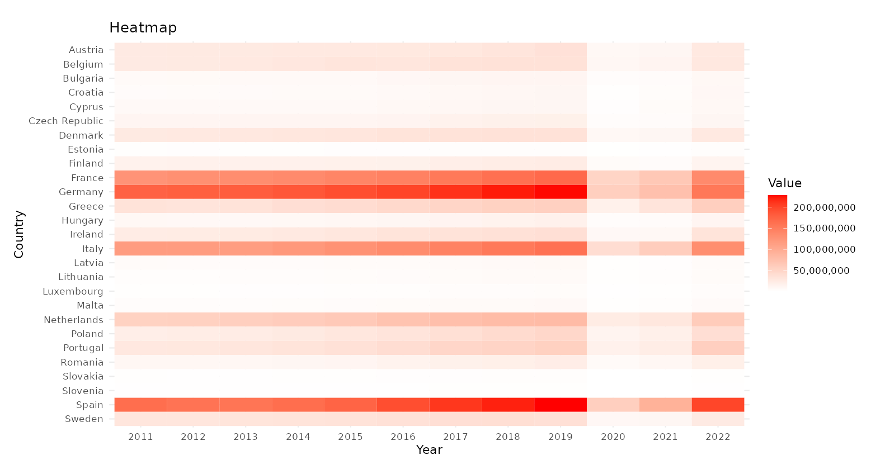

Data Story: The Big Picture
How have air transportation trends in EU27 countries evolved over the years?
To answer this question, data was obtained from Kaggle, a public data source. In the context of my data story, air transportation trends is scoped to focus specifically on the number of air passengers, allowing for a concentrated analysis of passenger traffic — an essential indicator of the aviation industry’s health and vitality.
Within this data set, air passengers counted are based on the following criteria: individuals are counted only once per flight number, irrespective of the number of legs on their journey, to prevent double-counting those who remain on board for multiple segments. This includes both fare-paying and non-fare-paying passengers as long as their flight starts or ends at the reporting airport, as well as those transferring to different flights. However, direct transit passengers who stay on the same aircraft during a stopover and do not switch planes, are excluded to ensure accuracy.
Understanding Current Trends
In understanding the question, I looked at overarching trends first. Which EU27 country carried the most number of air passengers over the years? Which year saw the most number of air passengers? To answer these, I conducted data analyses, beginning with trying to obtain a big picture of what the data in the data set represents.
Heatmap of Passengers
Heatmaps simplify complex data into an easily interpretable visual format, allowing for quick pattern recognition and analysis. It provides immediate insights into trends and outliers as high and low values are instantly recognisable due to color intensity differences. Heatmaps capture the essence of the data’s story without the need for complex interpretation, making it accessible to a broad audience.

With deeper hues signifying higher passenger counts, it becomes immediately apparent that Germany and Spain, followed by France and Italy, consistently outperform the rest of the EU27 countries in air travel density. This heatmap also starkly highlights the tumultuous impact of global events on travel trends. The years 2020 and 2021 are markedly distinguished by a pronounced dip in color intensity, corresponding to a significant contraction in air travel, serving as a visual quantifier of the pandemic’s impact on air travel across the EU27 region.
Overall, the heatmap dynamically tracks the ebb and flow of air travel trends, presenting a timeline that reflects both the stability of leading nations in air transport and the vulnerability of the sector to external events like the pandemic.
Thereafter, I dived deeper into understand general trends by investigating the number of passengers with various variables, particularly the country and year.
Number of Passengers By Country
This bar graph shows the total number of passengers carried by each country from 2011 to 2022. It provides a comparison between countries, allowing for a better understanding of which EU27 countries were more popular. From the graph, countries with higher peaks include France, Germany, Italy, the Netherlands and Spain whereas countries with lower peaks include Estonia, Slovakia and Slovenia.
Number of Passengers By Year
This bar graph shows there was a steady increase in the total number of passengers carried from 2011 to 2019, with 2019 being the year with the most number of passengers carried before a sharp drop in 2020.
To better understand growth patterns for EU27 countries as a whole, a growth rate line graph on the total number of passengers carried each year was generated. The growth rate line graph mirrored the bar graph in revealing consistent growth for EU27 countries from 2011 to 2019. In the pre-pandemic years, the lowest growth rate occurred between 2011 and 2012 at a rate of 0.66%, while the highest growth rate occurred between 2016 to 2017 at a rate of 8.40%.
With the outbreak of COVID-19 in 2019, the growth rate from 2019 to 2020 fell by a sharp -73.44%. As we all know and experienced it, the outbreak of the pandemic led to lockdowns worldwide and travel restrictions. With the easing of lockdowns and travel restrictions, the growth rate from 2020 to 2021 picked up again at a rate of 39.09%. While many other countries worldwide, particularly in the region of Asia, remained in lockdown in 2020, EU27 leaders announced on June 30 2020 that it would reopen its borders to travellers from 14 countries. This was its first step towards lifting travel restrictions, allowing for air travel to gradually pick up again. With the complete lifting of lockdowns and easing of travel restrictions, the growth rate of total number of passengers carried across EU27 countries from 2021 to 2022 increased to 117.73%. This sharp recovery brought passengers carried closer to pre-pandemic levels, with the total number of passengers in 2022 being closely similar to that of 2015.
Contribution by Country Each Year
To complement my understanding of the previous bar chart on the number of passengers by year, I decided to improve on this visualisation plot and modify it into a stacked bar chart. This allows me to use colour-coded schemes to differentiate each country and create a stratified depiction of annual contributions, facilitating an immediate comprehension of each country’s share. Based on the stacked bar plot, it is clear that countries from Germany, Spain, France, Italy and the Netherlands have been steadfast in their roles as principal contributors to the aggregate number of air passengers, year after year. This highlights the dominant aviation markets within the EU27, with Germany taking the lead in pre pandemic years and Spain taking the lead in post pandemic years.
Predicting Future Trends
Now that you’ve grasped a basic understanding of current trends, you might be curious (just like me!) as to how recovery trends will look like especially in a post COVID-19 world! Therefore, I also worked on a predicted growth rates line graph to help me predict future trends.
This line graph depicts predicted growth rates for the years 2012 to 2027, but the values for 2012 to 2019 correspond to the values from the line graph on year-on-year growth rates under the “Number of Passengers by Year” tab as mentioned earlier. I have kept these data in this visualisation plot to provide you with a full picture of how growth rates have developed and could be developing in future!
In calculating predicted growth rates, only data from 2011 to 2019 was used. The rationale for this stems from the extraordinary circumstances of 2020, where the COVID-19 pandemic introduced extreme deviations from established trends. Therefore, calculating predicted growth rates based on historical data from 2011 to 2022, which includes 2020, is non-representative of the normative progression observed in the preceding years.
One caveat of such a prediction model is that the predicted growth rates graph was generated on the assumption that air travel trends pre and post COVID-19 will remain somewhat similar. That is, I expect the continuity of air travel trends as observed in the pre-COVID era, projecting forward into the post-pandemic landscape. This presupposes a degree of stability and resilience in travel behaviors and industry patterns that may not fully account for the potential long-term shifts engendered by the pandemic—ranging from changes in consumer confidence and business travel norms to structural shifts in the global economy and international mobility.
Nevertheless, the model affords a distinct advantage: it offers a hypothetical trajectory for 2020 through 2022 — a counter-factual narrative of what might have been in the absence of the pandemic. By extrapolating from the historical data that predates COVID-19, the model depicts a projection of growth rates untainted by the pandemic’s impact. For instance, had the pandemic not occurred, the predicted growth rate for 2020 stands at a promising 7.87%, with expectations set for a consistent uptrend through to 2027. By juxtaposing this potential growth against the stark reality — a sharp decline to -73.44% in 2020 as seen in the year-on-year growth rates graph above — the contrasting figures illuminate the disruption of the pandemic. This alternate timeline offers valuable insights, serving as a comparative baseline against which to measure the actual pandemic-induced deviations, thereby enhancing our understanding of the pandemic’s true effect on air travel trends.
Evaluation
You may be wondering… why is understanding these numbers on the total number of air passengers carried important?
For the EU27 as a cohesive entity, it informs strategic policy development and infrastructure expansion to manage the flow of travelers effectively and sustaineably. This is particularly crucial for the EU27, where borderless movement is a foundational principle. Depending on changes in passenger counts in a post pandemic world, it becomes imperative to anticipate the need for enhanced airport capacity, resource optimisation and public health measures to foster a resilient air travel network.